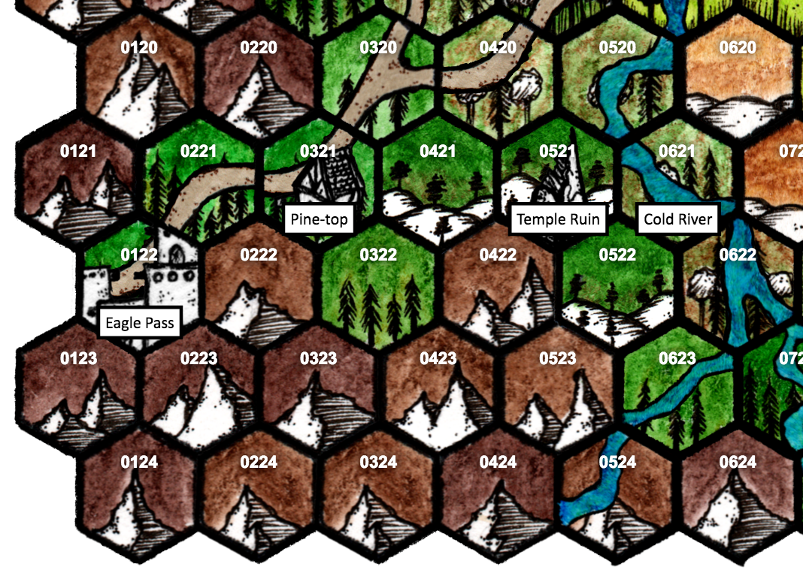

Pine-top village¶
Pine-top is one of the few villages left in the foothills below Eagle Pass that still has a mostly imperial population. The countryside around Pine-top is very hilly, coniferous and mixed forest. Along the eastern edge of the region, the Cold River falls out of the mountains and moves quickly through steep ravines towards the meadows and grasslands farther north.
Travel in the region¶
The only easy travel in the region is along the imperial road that goes through Pine-top village towards Fort Dauntless and the Stonhell Prison.
Mountains. Mountain hexes along the edge of the map, next to Eagle Pass, and those surrounded by mountain hexes, are generally impassable for travel through them, but those with climbing equipment and specialized knowledge of the area may be able to find slow ways through the hexes.
Mountain hexes next to forest hexes are very difficult terrain; a full day’s travel can get through them.
Forest. Forest hexes are generally difficult terrain, especially those with hills in them, and require a half day’s travel to pass through.
Road. The road through the region is a well-built, imperial road, with stone quarried from the mountains around Eagle Pass.
Notable hexes¶
0122. Eagle Pass – Walled imperial fort town, population a few thousand. Eagle Pass was planned and constructed as a bullwark to hold the pass west into the Empire. It is easily holdable against forces without strong military organization or siege engineering.
0222. Quarry – The quarries that yielded the stone to build the buildings and walls of Eagle Pass, and the roads to Fort Dauntless and the prison are in this hex. They were prepared by top-flight imperial engineers and are still used by masons in Eagle Pass, but they are a shadow of their former industry.
0321. Pine-top village – Pallisaded imperial farming village, population a few hundred. About two thirds of the population in the village, and the farmsteads around it, are imperial settlers. The village has weekly markets, a smithy, a carpenter or two, a tanner and leatherworker, a chandler, a weaver, a cooper, and a brewer. The village is technically governed by the legate at Eagle Pass, but in practical terms, most matters are handled by a council of the senior professionals in the village.
0421. Black Charles and his gang – A gang of brigands, lead by the thuggish Black Charles, have a camp in the hills here. They frequently descend upon traffic on the road to their north and west, and anyone travelling on the road who cares to listen can be warned of their presence by the folk in Pine-top. The brigands often patrol the woods around their camp in small groups, hunting for food, along with several mastiffs; when holding up traffic on the roads, they typically appear in larger numbers.
0521. Ruined Eld temple – An ancient Eldritch temple has recently had its upper dome unearthed, thanks to a rock and mud slide down a hill after a storm. The unsealing of the temple has resulted in several threats slowly spreading out over the nearby countryside:
- Spores from the temple, sealed up for centuries, have taken root, and it’s not uncommon to find various spawn of Gulthias in the surrounding woods: twiglings and needlers, in particular.
- A wight, resident of the upper reaches of the temple dome, has killed and infected several creatures, turning them into zombies. Now, they reside in the temple dome as well, and wander the woods, hungry for flesh.